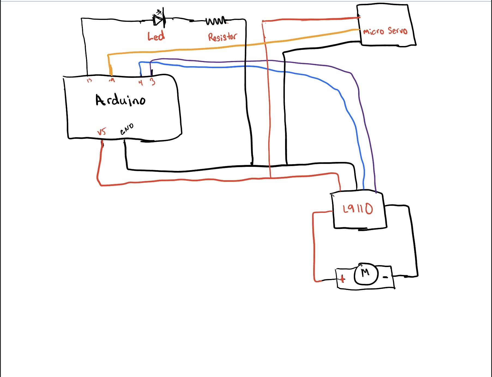

<br>
#### Week 3: Microcontroller Programming
This week was an introduction to microcontroller programming.
I decided to build off my previous assignment, which was the Marching Machine project. My goal for this project was to program my Marching Machine to move for a certain amount of time and reverse as well.
<div class="row">
<!-- <div class="col-4">
<p><img src="band.gif" alt="this band moves" width="250" />
</ul> </p>
</div> -->
<div class="col text-center">
<img class="mx-auto d-block" src="band.gif" alt="this band moves" style="width:400px;height:500px;">
</div>
</div>
</div>
I had to first learn how to us an Arduino board in order to be able to program it. I was able to quickly learn how to program it with the help of the website listed below.
<ul>
<li> <a href="https://www.eitkw.com/wp-content/uploads/2020/03/Arduino_Projects_Book.pdf"> Arduino Projects Book </a></li>
<li><a href="https://www.youtube.com/watch?v=fJWR7dBuc18"> Arduino Tutorial 1 </a></li>
<li><a href="https://nathanmelenbrink.github.io/ps70/04_arduino/index.html "> Microcontroller Programming </a></li>
</ul>
<p>I thought it would be a good idea to sketch out the circuit on my iPad because I wasn't sure where to begin. I originally intended to complete my project with just an Arduino and a motor, but I felt that would be boring. So, to add some pizzazz, I added an LED and other nice components to my circuit to get more practice utilizing them. </p>
<h2>Picture of circuit</h2>
<div class="container">
<div class="row">
<div class="col-4">
<p>This was my first time using different elements to program a motor to run by itself. By drawing the circuit, I was able to see what material I would need to program my marching machine. I felt more confident that I could make it work!
The material I use included:
<ul>
<li>Arduino board </li>
<li>Led </li>
<li>1 100hz Resistor </li>
<li>Micro Sero </li>
<li>L9110 </li>
<li>Motor </li>
<li>Cable cords </li>
</ul> </p>
</div>
<div class="col-8 text-center">

</div>
</div>
</div>
I decided to build a circuit using a Led, Micro Sero, and L9110 in order to make my marching machine more interesting. I uploaded the code for utilizing Multi-tasking for Arduino by following the instructions on this page. Additionally, I developed a class in my code for the motor and utilized an if/else statement to control how long it marches in one direction and when to change directions in order to accomplish my aim of making it more fourth for a predetermined length of time.
Here is my code down below.
<div class="text-sm bg-light" style="height: 500px; overflow-y: auto;border-style: solid;">
<p><pre><code class="language-html">#include <Servo.h>
#include <Servo.h>
class Flasher
{
// Class Member Variables
// These are initialized at startup
int ledPin; // the number of the LED pin
long OnTime; // milliseconds of on-time
long OffTime; // milliseconds of off-time
// These maintain the current state
int ledState; // ledState used to set the LED
unsigned long previousMillis; // will store last time LED was updated
// Constructor - creates a Flasher
// and initializes the member variables and state
public:
Flasher(int pin, long on, long off)
{
ledPin = pin;
pinMode(ledPin, OUTPUT);
OnTime = on;
OffTime = off;
ledState = LOW;
previousMillis = 0;
}
void Update()
{
// check to see if it's time to change the state of the LED
unsigned long currentMillis = millis();
if((ledState == HIGH) && (currentMillis - previousMillis >= OnTime))
{
ledState = LOW; // Turn it off
previousMillis = currentMillis; // Remember the time
digitalWrite(ledPin, ledState); // Update the actual LED
}
else if ((ledState == LOW) && (currentMillis - previousMillis >= OffTime))
{
ledState = HIGH; // turn it on
previousMillis = currentMillis; // Remember the time
digitalWrite(ledPin, ledState); // Update the actual LED
}
}
};
class Sweeper
{
Servo servo; // the servo
int pos; // current servo position
int increment; // increment to move for each interval
int updateInterval; // interval between updates
unsigned long lastUpdate; // last update of position
public:
Sweeper(int interval)
{
updateInterval = interval;
increment = 1;
}
void Attach(int pin)
{
servo.attach(pin);
}
void Detach()
{
servo.detach();
}
void Update()
{
if((millis() - lastUpdate) > updateInterval) // time to update
{
lastUpdate = millis();
pos += increment;
servo.write(pos);
Serial.println(pos);
if ((pos >= 180) || (pos <= 0)) // end of sweep
{
// reverse direction
increment = -increment;
}
}
}
};
//Motor
class Motor
{
int A1A;// = 3; // define pin 3 for A-1A (PWM Speed)
int A1B;// = 4; // define pin 4 for A-1B (direction)
int motorSpeed;
int motorDir;
long updatemotor;
unsigned long lastUpdate;
public:
Motor(int pinSpeed, int pinDir, int speed, int direction, long interval)
{
A1A = pinSpeed;
A1B = pinDir;
motorSpeed = speed;
motorDir = direction;
pinMode(A1A, OUTPUT); // specify these pins as outputs
pinMode(A1B, OUTPUT);
analogWrite(A1A, motorSpeed); // start with the motors off
digitalWrite(A1B, motorDir);
updatemotor = interval;
}
void Update(){
if((millis() - lastUpdate) > updatemotor) // time to update
{
lastUpdate = millis();
if (motorDir == HIGH)
{
motorDir = LOW;
}
else{
motorDir = HIGH;
}
digitalWrite(A1B, motorDir);
}
}
};
Flasher led1(13, 123, 400);
Sweeper sweeper1(15);
Motor motor1(3,4,150,LOW,1000);
void setup()
{
Serial.begin(9600);
sweeper1.Attach(9);
}
void loop()
{
sweeper1.Update();
motor1.Update();
led1.Update();
}
</code></pre></p>
</div>
##"The Marching Machine Circuit"
By Shekinah Newson
<video width="500px" height="500px" controls>
<source src="week5vid.mp4" type="video/mp4">
</video>